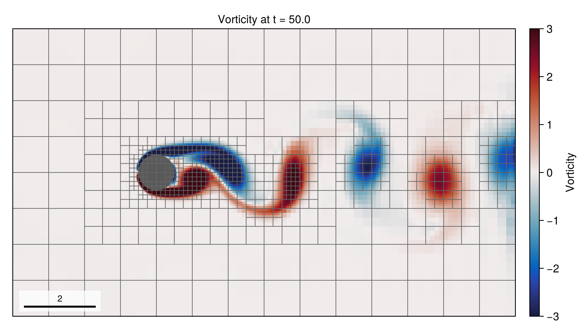
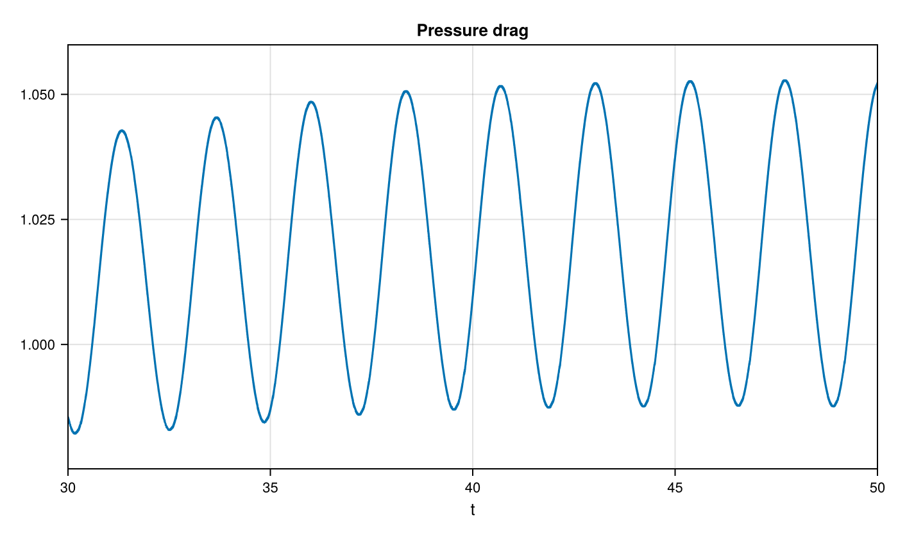
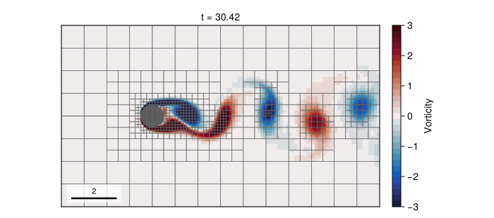

04 – Cylinder flow
A uniform inflow passes an embedded circular cylinder while adaptive blocks follow the solid and vorticity.

At a glance
| Physics | Single phase, density 1, unit free-stream speed and unit cylinder diameter. The default is reynolds=100 (viscosity 0.01); the gallery uses reynolds=200 (viscosity 0.005). The domain is [-4, 10] × [-4, 4]; left inflow is (1, 0), the right is outflow, and top and bottom use zero-gradient velocity. |
| Algorithms | Embedded GeometryField with PLIC solid geometry, staggered Lax–Wendroff advection, implicit-midpoint diffusion and pressure projection. Pressure uses CG/tree multigrid; diffusion uses tree multigrid and selects CG or BiCGSTAB by matrix symmetry. Geometry and vorticity indicators drive AMR above the base level, with update interval and coarsen delay 5. |
| Worth varying | reynolds=100 changes viscosity; max_level=3, the run_example default, is a coarse reference at 16 cells per diameter (C_D,p ≈ 0.83, St ≈ 0.223 over t=30–50, about 15 minutes); max_level=4 doubles the cells per diameter and is the gallery setting; final_time=40 changes the simulated duration; dt=nothing selects automatic steps. At max_level ≤ 1, the example disables dynamic criteria. |
| Validated against | The gallery's level-4 t=30–50 mean pressure drag is 1.01766 and its filtered-lift crossing estimate is St=0.2134, respectively 4.7% below and 9.0% above the two-dimensional Re = 200 results of Qu et al. (2013), Table 3: C_D,p=1.068, St=0.1958 (their total drag is 1.316). The level-4 drag still creeps upward at t=50 (1.014 over t=30–40, 1.021 over t=40–50), so the window carries a small positive bias, and St is not converged: level 3 gives 0.2227 and level 4 gives 0.2134, so a crossings-based St would want level 5. Pressure drag excludes viscous stress, and Qu et al. report reaching the saturated two-dimensional state around t=60. |
| Cost | Default: level 3, T=40, runtime and final cells unmeasured. The gallery uses level 4 and T=50: 333117 steps, 2618 mesh updates and 9952 final cells; setup and simulation took 4487 s and, with rendering, 4520 s on one thread, measured while another two-thread job shared the machine; issue #149 recorded 4338 s for the same configuration on an idle one. The level-3 gallery run this replaced had 83169 steps, 1458 mesh updates and 6016 final cells in 930.7 s. |
Gallery timings: Julia 1.12.7, one Julia thread and one BLAS thread, AMD Ryzen 9 5950X; package loading is excluded.
Setup
The solid is initialized from hypot(x, y) - 0.5, with 4 × 4-cell blocks on a 28 × 16 base mesh. The default initial fluid velocity is the unit inflow. The gallery adds a localized divergence-free initial vortex with streamfunction 0.1 exp(-((x-1)^2+(y-0.5)^2)/(2×0.5^2)) to seed the wake early; the inflow boundary stays (1,0). Re = 200 was chosen for comparison with a published two-dimensional benchmark while encouraging shedding. Geometry is refined to max_level, while the vorticity criterion uses thresholds 0.2 for refinement and 0.2/3 for coarsening. The pressure-only drag diagnostic reports
\[C_{D,p}=\frac{F_{p,x}}{\tfrac12\rho U^2D}=2F_{p,x} \quad (\rho=U=D=1).\]
The analogous :pressure_lift uses the vertical force. Neither diagnostic includes viscous stresses. Both sum over the cut cells' wall segments, which the example collects once per geometry revision instead of searching every cell at every step; every regrid and every re-initialized solid bumps that revision. See the method reference for cut cells, pressure projection and refinement criteria.
Run
From the repository root, use the gallery settings headlessly:
using TwoPhaseAMR
include("examples/04_cylinder_flow/cylinder_flow.jl")
run = run_example(max_level = 2, final_time = 10.0)
drag = diagnostic_history(run.flow, :pressure_drag)The direct example records keyframes in run.recorder (accessible via snapshot_store(run.recorder)) with the longer defaults. The second command renders the gallery run, which uses max_level=4 and T=50, with CairoMakie:
julia --project=examples examples/04_cylinder_flow/cylinder_flow.jl
julia --project=examples examples/04_cylinder_flow/make_figures.jlAppend --studio to the example command to follow the run in a browser; press Ctrl+C to close Studio after the run.
Both figure sizes run the gallery configuration; size=:default only enlarges the drag figure. Both print the diagnostic summary, the force statistics and the runtime.
Results
The hero shows final vorticity, gray leaf-block outlines and the reconstructed solid cylinder in black, on the fixed ±3 range used by the animation: the wall vorticity at 32 cells per diameter reaches ±20, and an automatic range taken from it would flatten the wake.


The last 20 time units of the docs run, t=30–50: the GIF samples 49 output frames on a uniform simulation-time grid, each showing the nearest of the 48 retained keyframes, over vorticity with a fixed range of ±3, AMR block outlines and the embedded cylinder in gray. The drag oscillates at twice the shedding frequency, so this window holds about eight drag cycles and four lift cycles.
For the frequency estimate, lift was sampled every 0.05 time units, averaged over an 11-sample window, and its upward mean crossings used to estimate the period. Over t=30–50 the upward crossings are 32.225, 36.913, 41.599 and 46.283, giving St=0.2134. The residual of the raw sampled lift minus the smoothed signal has RMS 0.010363, about 1.9% of the smoothed lift amplitude. Initial pressure force samples are deliberately NaN, because the impulsive-start state is not a developed force. These diagnostics exclude viscous stresses.
Resolution and far-field study (issue #149)
The pre-#116 sensitivity table this page used to archive has been dropped: those runs predate the current projection, cut-cell, transport and solver changes and were never repeated. It is replaced by the Re = 200 resolution and far-field study recorded in issue #149, which ran this page's run_example on the current code:
- Resolution is the lever. This domain, boundary conditions and seed give
C_D,p = 0.827andSt = 0.223at level 3 (16 cells per diameter) and1.018andSt = 0.213at level 4 (32 cells per diameter), narrowing the drag gap to Qu et al. from 22.6% to 4.7%. - The far field is not. Doubling the downstream extent to
[-4,20] × [-4,4]moves thet=30–50mean drag by +0.3% andStby +0.0007; doubling the laterals to[-4,10] × [-8,8]gives +1.4% and +0.002; both together atT=60give +1.9% and +0.005 at 2.9× the level-3 cost. - The lateral condition matters only while the boundary is close. Replacing
ZeroGradientVelocitybyFreeSlip()on the laterals, which turns the homogeneous Dirichlet pressure side into a Neumann side, adds +4.2% drag at 4D and +0.3% at 8D. - The projection fix survives every variant. The final
:divergence_normstays between2.1e-7and6.0e-6in every configuration tested, more than two orders below the pre-#1161.04e-3.
Level 5 (64 cells per diameter) was not run. For future sweeps the study recommends T=20 and drag only, about 360 s per configuration at level 3 against 903 s for T=50; St needs the full 20-unit window. For context, Qu et al. (§4.4.2) cite experimental St=0.182–0.184 near Re = 200, including Norberg (1994); those are three-dimensional physical wakes, unlike this two-dimensional example.
Variations
After including the example, try:
run_example(max_level = 1, final_time = 10.0) # base-level mesh, no dynamic criteria
run_example(max_level = 2, final_time = 20.0) # longer adaptive wake
run_example(reynolds = 50, max_level = 2, final_time = 10.0) # more viscous flowFiles
- cylinder_flow.jl — embedded geometry, AMR and pressure-drag diagnostic.
- make_figures.jl — headless solid/vorticity and drag plots.